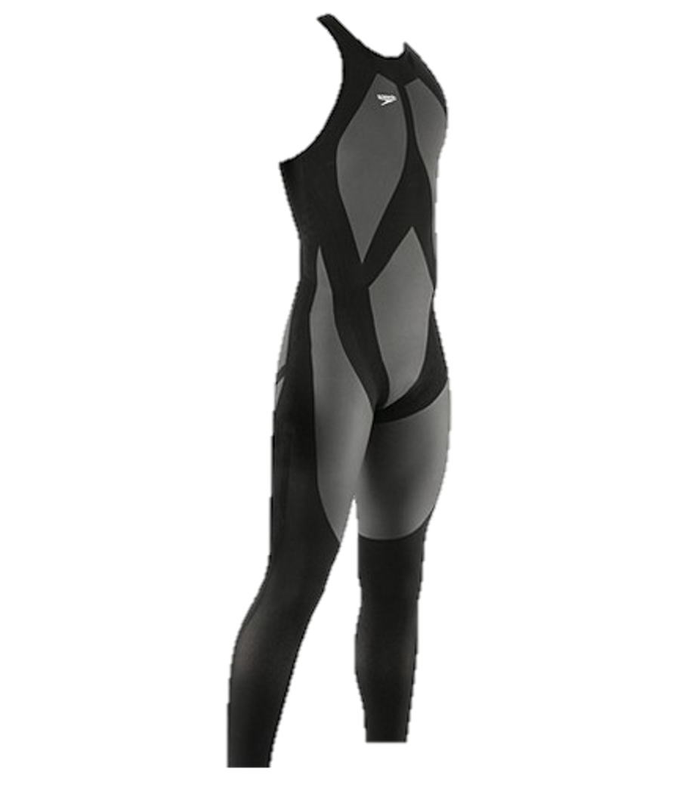

Technology and Sports
Athletes have definitely improved over the years. They are fitter, follow strict nutitional guidelines,
and have access to better resources than athletes of the past.
However, the role of technology in this improvement is often forgotten. Technology in sports is not limited to
electronic scoreboards or cameras to record every detail. Material technology and sports equipment have developed
significantly over the years and have helped athletes improve.
This visualization will discuss improvements in golf, swimming, and running.
Golf
The graph on the right plots the average drive distance, in yards, from the tee in 4 major golf tournaments from 1980 to 2019.
Graphite Shafts, 1995
The graphite shaft was first marketed in 1970 at the PGA Merchandise Show but did not gain widespread use until the mid-1990s and is now used on
almost all woods and some iron sets, as the carbon-fiber composite of graphite shafts boasts increased flex for greater clubhead speed at the cost
of slightly reduced accuracy due to greater torque.
Bottom line, it increased the distance, everything else being the same, by about 7 or 8 yards.
Acer Velocity Graphite Shaft
Titleist Pro V1, 2000
In 2000, golf equipment manufacturer Titleist released their solid core ball, the Titleist Pro V1. Because of the solid core, the ball was accurate
and could be hit for long distances.
Many professionals switched from wound core to solid core soon, resulting in a 6 yard increase in drive distance
between 2000 and 2001. Subsequent generations of the Pro V1 would also greately affect the drive distance.
Titleist Pro V1x golf ball
Hybrid Clubs, 2002
TaylorMade made the hybrid club popular with the release of its first set of hybrids in 2002. A hybrid golf club is simply a golf club which is designed
to be an easier to hit alternative to a long iron.
The primary advantage of a hybrid club is that it has design characteristics that make it easier to hit
the ball higher. In addition, a hybrid club on average will send a ball approximately 5 to 8 yards further than will a typical iron.

Callaway Legacy Black Hybrid Club
None of these golf innovations were banned by The Royal and Ancient Golf Club of St Andrews (R&A) or the United States
Golf Association (USGA), the governing bodies in golf.
(Data collected from PGA Tour and by surveying people at r/golf)
Swimming
The scatterplot on the right plots the 25 fastest times in 5 different men's swimming events and when they were broken.
Speedo LZR Suits, 2008
The LZR Elite is a performance body suit first manufactured by Speedo in 2008. The suits are made using a combination of elastane-nylon and polyurethane which reduce skin drag, compress the body and trap air for buoyancy. All these additional features allows for water to repel and reduce drag when swimming.
Speedo LZR Racer Suit
In the 2 year period in which the suits were allowed, 93 swimming world records were broken using the suits.
At the 2008 Beijing Olympics, 98% of medals in swimming competitions were awarded to swimmers wearing the suit, and 23 out of 25 world records
broken by swimmers wearing the suit.
The suits were banned by FINA, the federation recognized by the International Olympic Committee for administering competition of water sport, with the ban
in effect on January 1, 2010.
(Data scraped from Wikipedia)
Running
Nike Vaporfly Series, 2016
In 2016, Nike released the Nike Vaporfly 4%. The shoe was designed to give runners a considerable boost by saving energy spent by the runners. The shoes
started the major debate of "technological doping" in the world of running.
The key to the Vaporfly design is a carbon-fiber plate in the sole that's curved under the front of the shoe. That curvature helps quickly rock
a runner from their heels to their toes as they land and push off again.
The visualization on the right points out key facts about the shoe. Clicking on the tiles will lead to their respective sources.
Nike ZoomX Vaporfly NEXT%
Despite the controversy surrounding the shoe, the Vaporflys are still legal.
The International Olympic Committee ruled that shoes with soles thicker than 40mm
or containing more than one carbon-fibre plates are not allowed. The Vaporflys meet these requirements.
Do you think the Vaporflys should be banned?
Fin
This visualization was made by the Vaporflies (Ross Cefalu, Shourya Khare, Sophie Handel, Tyler Jones) as the final project for CS 4460: Introduction
to Information Visualization course in Spring 2020.
Many thanks to Jim Valladingham whose article was really useful in building this visualization.
Recommended browsers are Google Chrome and
Mozilla Firefox.